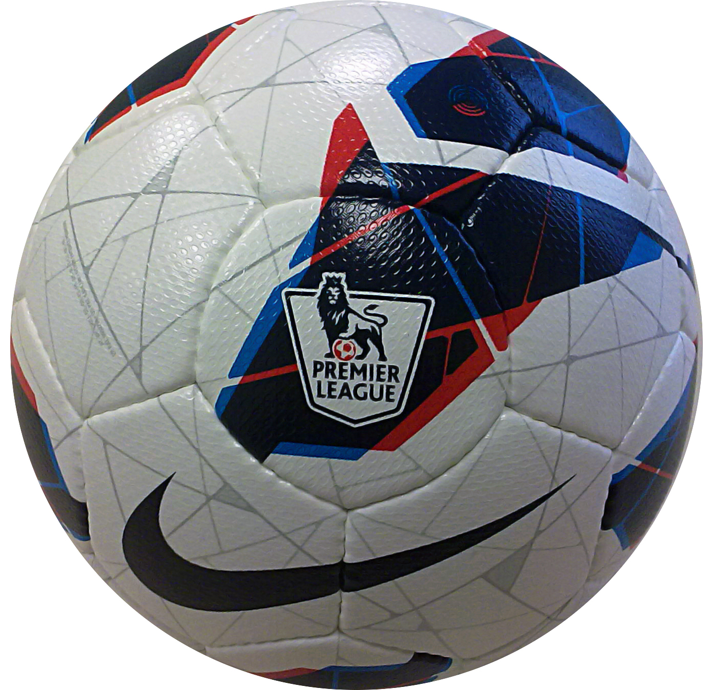
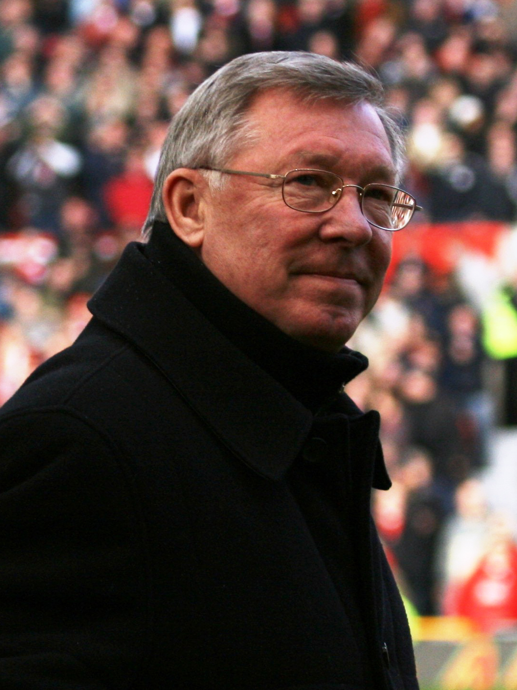
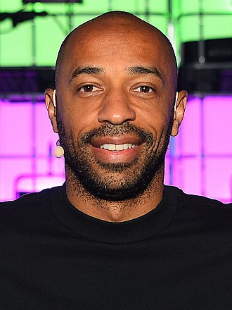
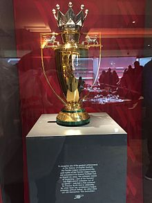

From Wikipedia, the free encyclopedia Jump to navigation Jump to search Association football league in England This article is about the English association football league. For other uses, see Premier League (disambiguation). Football league

Founded 20 February 1992; 30 years ago (1992-02-20)
Country England
Confederation UEFA
Number of teams 20
Level on pyramid 1
Relegation to EFL Championship
Domestic cup(s)
EFL Cup
International cup(s)
Current champions Manchester City (5th title)(2020–21)
Most appearances Gareth Barry (653)
Top goalscorer Alan Shearer (260)
TV partners
Website premierleague.com
Current: 2021–22 Premier LeagueThe Premier League, also known as the English Premier League or the EPL (legal name: The Football Association Premier League Limited), is the top level of the English football league system. Contested by 20 clubs, it operates on a system of promotion and relegation with the English Football League (EFL). Seasons typically run from August to May with each team playing 38 matches (playing all 19 other teams both home and away). [1] Most games are played on Saturday and Sunday afternoons. [2]
The competition was founded as the FA Premier League on 20 February 1992 following the decision of clubs in the Football League First Division to break away from the Football League, founded in 1888, and take advantage of a lucrative television rights sale to Sky.[3] From 2019 to 2020, the league's accumulated television rights deals were worth around £3.1 billion a year, with Sky and BT Group securing the domestic rights to broadcast 128 and 32 games respectively.[4][5] The Premier League is a corporation where chief executive Richard Masters is responsible for its management, whilst the member clubs act as shareholders.[6] Clubs were apportioned central payment revenues of £2.4 billion in 2016–17, with a further £343 million in solidarity payments to English Football League (EFL) clubs.[7]
The Premier League is the most-watched sports league in the world, broadcast in 212 territories to 643 million homes and a potential TV audience of 4.7 billion people.[8][9] For the 2018–19 season, the average Premier League match attendance was at 38,181,[10] second to the German Bundesliga's 43,500,[11] while aggregated attendance across all matches is the highest of any association football league at 14,508,981.[12] Most stadium occupancies are near capacity.[13] The Premier League ranks first in the UEFA coefficients of leagues based on performances in European competitions over the past five seasons as of 2021.[14] The English top-flight has produced the second-highest number of UEFA Champions League/European Cup titles, with five English clubs having won fourteen European trophies in total.[15]
Fifty clubs have competed since the inception of the Premier League in 1992: forty-eight English and two Welsh clubs. Seven of them have won the title: Manchester United (13), Chelsea (5), Manchester City (5), Arsenal (3), Blackburn Rovers (1), Leicester City (1) and Liverpool (1).[16]
Despite significant European success in the 1970s and early 1980s, the late 1980s marked a low point for English football. Stadiums were crumbling, supporters endured poor facilities, hooliganism was rife, and English clubs had been banned from European competition for five years following the Heysel Stadium disaster in 1985.[17] The Football League First Division, the top level of English football since 1888, was behind leagues such as Italy's Serie A and Spain's La Liga in attendances and revenues, and several top English players had moved abroad.[18]
By the turn of the 1990s, the downward trend was starting to reverse. At the 1990 FIFA World Cup, England reached the semi-finals; UEFA, European football's governing body, lifted the five-year ban on English clubs playing in European competitions in 1990, resulting in Manchester United lifting the UEFA Cup Winners' Cup in 1991. The Taylor Report on stadium safety standards, which proposed expensive upgrades to create all-seater stadiums in the aftermath of the Hillsborough disaster, was published in January 1990.[19]
During the 1980s, major English clubs had begun to transform into business ventures, applying commercial principles to club administration to maximise revenue. Martin Edwards of Manchester United, Irving Scholar of Tottenham Hotspur, and David Dein of Arsenal were among the leaders in this transformation.[20] The commercial imperative led to the top clubs seeking to increase their power and revenue: the clubs in Division One threatened to break away from the Football League, and in so doing they managed to increase their voting power and gain a more favourable financial arrangement, taking a 50% share of all television and sponsorship income in 1986.[20] They demanded that television companies should pay more for their coverage of football matches,[21] and revenue from television grew in importance. The Football League received £6.3 million for a two-year agreement in 1986, but by 1988, in a deal agreed with ITV, the price rose to £44 million over four years with the leading clubs taking 75% of the cash.[22][23] According to Scholar, who was involved in the negotiations of television deals, each of the First Division clubs received only around £25,000 per year from television rights before 1986, this increased to around £50,000 in the 1986 negotiation, then to £600,000 in 1988.[24] The 1988 negotiations were conducted under the threat of ten clubs leaving to form a "super league", but they were eventually persuaded to stay, with the top clubs taking the lion's share of the deal.[22][25][26] The negotiations also convinced the bigger clubs that in order to receive enough votes, they needed to take the whole of First Division with them instead of a smaller "super league".[27] By the beginning of the 1990s, the big clubs again considered breaking away, especially now that they had to fund the cost of stadium upgrade as proposed by the Taylor Report.[28]
In 1990, the managing director of London Weekend Television (LWT), Greg Dyke, met with the representatives of the "big five" football clubs in England (Manchester United, Liverpool, Tottenham Hotspur, Everton and Arsenal) over a dinner.[29] The meeting was to pave the way for a breakaway from The Football League.[30] Dyke believed that it would be more lucrative for LWT if only the larger clubs in the country were featured on national television and wanted to establish whether the clubs would be interested in a larger share of television rights money.[31] The five clubs agreed with the suggestion and decided to press ahead with it; however, the league would have no credibility without the backing of The Football Association, and so David Dein of Arsenal held talks to see whether the FA were receptive to the idea. The FA did not enjoy an amicable relationship with the Football League at the time and considered it as a way to weaken the Football League's position.[32] The FA released a report in June 1991, Blueprint for the Future of Football, that supported the plan for Premier League with FA the ultimate authority that would oversee the breakaway league.[27]
See also: Foundation of the Premier League
At the close of the 1990–1991 season, a proposal was tabled for the establishment of a new league that would bring more money into the game overall. The Founder Members Agreement, signed on 17 July 1991 by the game's top-flight clubs, established the basic principles for setting up the FA Premier League.[33] The newly formed top division was to have commercial independence from The Football Association and the Football League, giving the FA Premier League licence to negotiate its own broadcast and sponsorship agreements. The argument given at the time was that the extra income would allow English clubs to compete with teams across Europe.[18] Although Dyke played a significant role in the creation of the Premier League, he and ITV (of which LWT was part) lost out in the bidding for broadcast rights: BSkyB won with a bid of £304 million over five years, with the BBC awarded the highlights package broadcast on Match of the Day.[29][31]
The First Division clubs resigned en masse from the Football League in 1992, and on 27 May that year the FA Premier League was formed as a limited company, working out of an office at the Football Association's then headquarters in Lancaster Gate.[18] The 22 inaugural members of the new Premier League were:[34]
This meant a break-up of the 104-year-old Football League that had operated until then with four divisions; the Premier League would operate with a single division and the Football League with three. There was no change in competition format; the same number of teams competed in the top flight, and promotion and relegation between the Premier League and the new First Division remained the same as the old First and Second Divisions with three teams relegated from the league and three promoted.[26]
The league held its first season in 1992–93. It was composed of 22 clubs for that season (reduced to 20 in the 1995–96 season). The first Premier League goal was scored by Brian Deane of Sheffield United in a 2–1 win against Manchester United.[35] Luton Town, Notts County, and West Ham United were the three teams relegated from the old First Division at the end of the 1991–92 season, and did not take part in the inaugural Premier League season.[36]
| Season | ARS | CHE | LIV | MUN | |
| 2000–01 | 2 | 6 | 3 | 1 | |
| 2000–02 | 1 | 6 | 2 | 3 | |
| 2000–03 | 2 | 4 | 5 | 1 | |
| 2000–04 | 1 | 2 | 4 | 3 | |
| 2000–05 | 2 | 1 | 5 | 3 | |
| 2000–06 | 4 | 1 | 3 | 2 | |
| 2000–07 | 4 | 2 | 3 | 1 | |
| 2000–08 | 3 | 2 | 4 | 1 | |
| 2000–09 | 4 | 3 | 2 | 1 | |
| 2000–10 | 3 | 1 | 7 | 2 | |
| Top four | 10 | 8 | 7 | 10 | |
| out of 10 |
The 2000s saw the dominance of the so-called "Top Four" clubs. Arsenal, Chelsea, Liverpool and Manchester United[37][38] finished at the top of the table for bulk of the decade, thereby guaranteeing qualification for the UEFA Champions League. Only four other clubs managed to qualify for the competition during this period: Leeds United (2000-01), Newcastle United (2001–02 and 2002–03), Everton (2004–05) and Tottenham Hotspur (2009–10) – each occupying the final Champions League spot, with the exception of Newcastle in the 2002–03 season, who finished third.
Following the 2003–04 season, Arsenal acquired the nickname "The Invincibles" as it became the first club to complete a Premier League campaign without losing a single game, the only time this has ever happened in the Premier League.[39][40] complete a Premier League campaign without losing a single game, the only time this has ever happened in the Premier League.[39][40]In May 2008, Kevin Keegan stated that "Top Four" dominance threatened the division: "This league is in danger of becoming one of the most boring but great leagues in the world."[41] Premier League chief executive Richard Scudamore said in defence: "There are a lot of different tussles that go on in the Premier League depending on whether you're at the top, in the middle or at the bottom that make it interesting."[42]
Between 2005 and 2012 there was a Premier League representative in seven of the eight Champions League finals, with only "Top Four" clubs reaching that stage. Liverpool (2005), Manchester United (2008) and Chelsea (2012) won the competition during this period, with Arsenal (2006), Liverpool (2007), Chelsea (2008) and Manchester United (2009 and 2011) all losing Champions League finals.[43] Leeds United were the only non-"Top Four" side to reach the semi-finals of the Champions League, in the 2000–01 season. There were three Premier League teams in the Champions League semi-finals in 2006-07, 2007-08, and 2008-09, a feat only ever achieved five times (along with Serie A in 2002-03 and La Liga in 1999-2000).
Additionally, between the 1999–2000 and 2009–10 seasons, four Premier League sides reached UEFA Cup or Europa League finals, with only Liverpool managing to win the competition in 2001. Arsenal (2000), Middlesbrough (2006) and Fulham (2010) all lost their finals.[44]
Although the group's dominance was reduced to a degree after this period with the emergence of Manchester City and Tottenham, in terms of all time Premier League points won they remain clear by some margin. As of the end of the 2018–19 season – the 27th season of the Premier League – Liverpool, in fourth place in the all-time points table, were over 250 points ahead of the next team, Tottenham Hotspur. They are also the only teams to maintain a winning average of over 50% throughout their entire Premier League tenures.[45]
| Season | ARS | CHE | LIV | MCI | MUN | TOT | |
| 2000–01 | 4 | 2 | 6 | 3 | 1 | 5 | |
| 2000–02 | 3 | 6 | 8 | 1 | 2 | 4 | |
| 2000–03 | 4 | 3 | 7 | 2 | 1 | 5 | |
| 2000–04 | 4 | 3 | 2 | 1 | 7 | 6 | |
| 2000–05 | 3 | 1 | 6 | 2 | 4 | 5 | |
| 2000–06 | 2 | 10 | 8 | 4 | 5 | 3 | |
| 2000–07 | 5 | 1 | 4 | 3 | 6 | 2 | |
| 2000–08 | 6 | 5 | 4 | 1 | 2 | 3 | |
| 2000–09 | 5 | 3 | 2 | 1 | 6 | 4 | |
| 2000–10 | 8 | 4 | 1 | 2 | 3 | 6 | |
| Top four | 6 | 7 | 5 | 10 | 6 | 5 | |
| Top six | 9 | 9 | 7 | 10 | 9 | 10 | |
| out of 10 |
The years following 2009 marked a shift in the structure of the "Top Four" with Tottenham Hotspur and Manchester City both breaking into the top four places on a regular basis, turning the "Top Four" into the "Big Six".[46] In the 2009–10 season, Tottenham finished fourth and became the first team to break the top four since Everton five years prior.[47] Criticism of the gap between an elite group of "super clubs" and the majority of the Premier League has continued, nevertheless, due to their increasing ability to spend more than the other Premier League clubs.[48] Manchester City won the title in the 2011–12 season, becoming the first club outside the "Big Four" to win since Blackburn Rovers in the 1994–95 season. That season also saw two of the "Big Four" (Chelsea and Liverpool) finish outside the top four places for the first time since that season.[46]
With only four UEFA Champions League qualifying places available in the league, greater competition for qualification now exists, albeit from a narrow base of six clubs. In the five seasons following the 2011–12 campaign, Manchester United and Liverpool both found themselves outside of the top four three times, while Chelsea finished 10th in the 2015–16 season. Arsenal finished 5th in 2016–17, ending their record run of 20 consecutive top-four finishes.[49]
In the 2015–16 season, the top four was breached by a non-Big Six side for the first time since Everton in 2005. Leicester City were the surprise winners of the league, qualifying for the Champions League as a result.[50]
| Club | Top 6 finishes | |
| Manchester City | 2 | |
| Tottenham Hotspur | 1 | |
| Chelsea | 2 | |
| Arsenal | 1 | |
| Manchester United | 2 | |
| Liverpool | 4 | |
| Leicester City | 4 | |
| Everton | 3 | |
| Southampton | 4 | |
| Newcastle United | 3 |
Off the pitch, the "Big Six" wield significant financial power and influence, with these clubs arguing that they should be entitled to a greater share of revenue due to the greater stature of their clubs globally and the attractive football they aim to play.[51] Objectors argue that the egalitarian revenue structure in the Premier League helps to maintain a competitive league which is vital for its future success.[52] The 2016–17 Deloitte Football Money League report showed the financial disparity between the "Big Six" and the rest of the division. All of the "Big Six" had revenues greater than €350 million, with Manchester United having the largest revenue in the league at €676.3 million. Leicester City was the closest club to the "Big Six" in terms of revenue, recording a figure of €271.1 million for that season – helped by participation in the Champions League. The eighth-largest revenue generator, West Ham – who did not play in European competition – had revenues of €213.3 million, nearly half of those of the club with the fifth-largest revenue, Liverpool (€424.2 million).[53] A substantial part of the clubs' revenue by then came from television broadcast deals, with the biggest clubs each taking from around £150 million to nearly £200 million in the 2016–17 season from such deals.[54] In Deloitte's 2019 report, all the "Big Six" were in the top ten of the world's richest clubs.[55]
| Season | ARS | CHE | LIV | MCI | MUN | TOT | |
| 2020–21 | 8 | 4 | 3 | 1 | 2 | 7 | |
| Top four | 0 | 1 | 1 | 1 | 1 | 0 | |
| Top six | 0 | 1 | 1 | 1 | 1 | 0 | |
| out of 1 |
From the 2019–20 season, video assistant referees were used in the league.[56]
Project Big Picture was announced in October 2020 that described a plan to reunite the top Premier League clubs with the English Football League, proposed by leading Premier League clubs Manchester United and Liverpool.[57] It has been criticised by the Premier League leadership and the UK government's Department of Culture, Media and Sport.[58]
On 26 April 2021, play was stopped during a match between Leicester City and Crystal Palace to allow players Wesley Fofana and Cheikhou Kouyaté to break Ramadan fast. It is believed to be the first time in Premier League history that a game was paused to allow Muslim players to eat and drink after the sun had set in accordance with the rules of the faith.[59]
The 2022–23 season will be the first to take a six-week break between November and December 2022 to allow for the first winter World Cup,[60] with a return for the Boxing Day fixtures.[61]
| Club | Top 6 finishes | |
| Manchester City | 1 | |
| Chelsea | 1 | |
| Manchester United | 1 | |
| Liverpool | 1 | |
| Leicester City | 1 | |
| West Ham United | 1 |
The Football Association Premier League Ltd (FAPL)[62][63][64] is operated as a corporation and is owned by the 20 member clubs. Each club is a shareholder, with one vote each on issues such as rule changes and contracts. The clubs elect a chairman, chief executive, and board of directors to oversee the daily operations of the league.[65] The Football Association is not directly involved in the day-to-day operations of the Premier League, but has veto power as a special shareholder during the election of the chairman and chief executive and when new rules are adopted by the league.[66]
The current chief executive is Richard Masters, who was appointed in December 2019,[67] and the chairman is Gary Hoffman, appointed in April 2020.[68] Both men succeeded Richard Scudamore, who held the combined position of "Executive Chairman" from November 1999 until his retirement in November 2019.[68]
The Premier League sends representatives to UEFA's European Club Association, the number of clubs and the clubs themselves chosen according to UEFA coefficients. For the 2012–13 season the Premier League has 10 representatives in the Association: Arsenal, Aston Villa, Chelsea, Everton, Fulham, Liverpool, Manchester City, Manchester United, Newcastle United and Tottenham Hotspur.[69] The European Club Association is responsible for electing three members to UEFA's Club Competitions Committee, which is involved in the operations of UEFA competitions such as the Champions League and UEFA Europa League.[70]
The Premier League has faced criticism of its governance due to an alleged lack of transparency and accountability.
Following the Premier League's blocking of the attempted takeover of Newcastle United by a PIF-backed consortium through the league's Owners' and Directors' test, many MPs, Newcastle United fans and related parties to the deal denounced the Premier League for its perceived lack of transparency and accountability throughout the process.[71][72][73] On 6 July 2021, consortium member Amanda Staveley of PCP Capital Partners said that "fans surely deserve absolute transparency from the regulators across all their processes - to best ensure that they act responsibly. They (the Premier League) are performing a function like that of a government regulator - but without the same systems for accountability."[73]
On 22 July 2021, Tracey Crouch MP – chair of the fan-led review into the UK's football governance - announced in the review's interim findings that the Premier League had "lost the trust and confidence" of fans. The review also recommended that a new independent regulator be created to oversee matters such as club takeovers.[74][75]
Premier League chief executive Richard Masters had earlier spoken out against the implementation of an independent regulator, saying in May 2021, "I don’t think that the independent regulator is the answer to the question. I would defend the Premier League's role as regulator of its clubs over the past 30 years."[76]
Notably, one-time champions Blackburn Rovers are currently out of the Premier League.
The league changed its name from the FA Premier League to simply the Premier League in 2007.[113] From 1993 to 2016, the Premier League had title sponsorship rights sold to two companies, which were Carling brewery and Barclays Bank PLC; Barclays was the most recent title sponsor, having sponsored the Premier League from 2001 until 2016 (until 2004, the title sponsorship was held through its Barclaycard brand before shifting to its main banking brand in 2004).[114]
| Period | Sponsor | Brand | |
| 1992–1993 | No sponsor | FA Premier League | |
| 1993–2001 | Carling | FA Carling Premiership[18 | |
| 2001–2004 | Barclaycard | FA Barclaycard Premiership[18] | |
| 2004–2007 | Barclays | FA Barclays Premiership | |
| 2007–2016 | Barclays Premier League[18][115 | ||
| 2016–present | No sponsor | Premier League |
Barclays' deal with the Premier League expired at the end of the 2015–16 season. The FA announced on 4 June 2015 that it would not pursue any further title sponsorship deals for the Premier League, arguing that they wanted to build a "clean" brand for the competition more in line with those of major U.S. sports leagues.[116]
As well as sponsorship for the league itself, the Premier League has a number of official partners and suppliers.[117] The official ball supplier for the league is Nike who have had the contract since the 2000–01 season when they took over from Mitre.[118] Under its Merlin brand, Topps held the licence to produce collectables for the Premier League between 1994 and 2019 including stickers (for their sticker album) and trading cards.[119] Launched in the 2007–08 season, Topps’ Match Attax, the official Premier League trading card game, is the best selling boys collectable in the UK, and is also the biggest selling sports trading card game in the world.[119][120] In October 2018, Panini were awarded the licence to produce collectables from the 2019–20 season.[121] The chocolate company Cadbury has been the official snack partner of the Premier League since 2017, and sponsors the Golden Boot, Golden Glove, and Playmaker of the Season awards.[122][123]
The Premier League has the highest revenue of any association football league in the world, with total club revenues of €2.48 billion in 2009–10.[124][125] In 2013–14, due to improved television revenues and cost controls, the Premier League clubs collectively made a net profit in excess of £78 million, exceeding all other football leagues.[126] In 2010 the Premier League was awarded the Queen's Award for Enterprise in the International Trade category for its outstanding contribution to international trade and the value it brings to English football and the United Kingdom's broadcasting industry.[127]
The Premier League includes some of the richest football clubs in the world. Deloitte's "Football Money League" listed seven Premier League clubs in the top 20 for the 2009–10 season,[128] and all 20 clubs were in the top 40 globally by the end of the 2013–14 season, largely as a result of increased broadcasting revenue.[129] In 2019, the league generated around £3.1 billion per year in domestic and international television rights.[4]
Premier League clubs agreed in principle in December 2012, to radical new cost controls. The two proposals consist of a break-even rule and a cap on the amount clubs can increase their wage bill by each season. With the new television deals on the horizon, momentum has been growing to find ways of preventing the majority of the cash going straight to players and agents.[130]
Central payments for the 2016–17 season amounted to £2,398,515,773 across the 20 clubs, with each team receiving a flat participation fee of £35,301,989 and additional payments for TV broadcasts (£1,016,690 for general UK rights to match highlights, £1,136,083 for each live UK broadcast of their games and £39,090,596 for all overseas rights), commercial rights (a flat fee of £4,759,404) and a notional measure of "merit" which was based upon final league position.[7] The merit component was a nominal sum of £1,941,609 multiplied by each finishing place, counted from the foot of the table (e.g., Burnley finished 16th in May 2017, five places counting upwards, and received 5 × £1,941,609 = £9,708,045 merit payment).[7]
Since its split with the Football League, established clubs in the Premier League have a funding disparity from counterparts in lower leagues. Revenue from television rights between the leagues has played a part in this.[131]
Promoted teams have found it difficult to avoid relegation in their first Premier League season. One Premier League newcomer has been relegated back to the Football League every season, save the 2001–02, 2011–12 and 2017–18 seasons. In the 1997–98 season, all three promoted clubs were relegated by the season's end.[132]
The Premier League distributes a portion of its television revenue as "parachute payments" to relegated clubs for adjustment to television revenue loss. The average Premier League team receives £41 million[133] while the average Championship club receives £2 million.[134] Starting with the 2013–14 season, these payments are in excess of £60 million over four seasons.[135] Critics maintain that the payments widen the gap between teams that have reached the Premier League and those that have not,[136] leading to the common occurrence of teams "bouncing back" soon after their relegation.
Clubs which have failed to win immediate promotion back to the Premier League have seen financial problems, in some cases administration or liquidation. Further relegations down the footballing ladder have occurred for multiple clubs unable to cope with the gap.[137][138]
As of the 2017–18 season, Premier League football has been played in 58 stadiums since the formation of the division.[200] The Hillsborough disaster in 1989 and the subsequent Taylor Report saw a recommendation that standing terraces should be abolished. As a result, all stadiums in the Premier League are all-seater.[201][202] Since the formation of the Premier League, football grounds in England have seen constant improvements to capacity and facilities, with some clubs moving to new-build stadiums.[203] Nine stadiums that have seen Premier League football have now been demolished. The stadiums for the 2017–18 season show a large disparity in capacity. For example, Wembley Stadium, the temporary home of Tottenham Hotspur, has a capacity of 90,000 while Dean Court, the home of AFC Bournemouth, has a capacity of 11,360.[204][205] The combined total capacity of the Premier League in the 2017–18 season is 806,033 with an average capacity of 40,302.[204]
Stadium attendances are a significant source of regular income for Premier League clubs.[206] For the 2016–17 season, average attendances across the league clubs were 35,838 for Premier League matches with an aggregate attendance of 13,618,596.[207] This represents an increase of 14,712 from the average attendance of 21,126 recorded in the Premier League's first season (1992–93).[208] However, during the 1992–93 season, the capacities of most stadiums were reduced as clubs replaced terraces with seats in order to meet the Taylor Report's 1994–95 deadline for all-seater stadiums.[209][210] The Premier League's record average attendance of 36,144 was set during the 2007–08 season.[211] This record was then beaten in the 2013–14 season recording an average attendance of 36,695 with an attendance of just under 14 million, the highest average in England's top flight since 1950.[212]
I have never known this level before. Of course, there are managers in Germany, Italy, and Spain, but in the Premier League, these are the best managers, the elite managers. The quality, the preparation. The level is so high.
Pep Guardiola, on the quality of managers of Premier League teams.[213]
See also: List of Premier League managers
Managers in the Premier League are involved in the day-to-day running of the team, including the training, team selection and player acquisition. Their influence varies from club-to-club and is related to the ownership of the club and the relationship of the manager with fans.[214] Managers are required to have a UEFA Pro Licence which is the final coaching qualification available, and follows the completion of the UEFA 'B' and 'A' Licences.[215] The UEFA Pro Licence is required by every person who wishes to manage a club in the Premier League on a permanent basis (i.e., more than 12 weeks, the amount of time an unqualified caretaker manager is allowed to take control).[216] Caretaker appointments are managers that fill the gap between a managerial departure and a new appointment. Several caretaker managers have gone on to secure a permanent managerial post after performing well as a caretaker, including Paul Hart at Portsmouth and David Pleat at Tottenham Hotspur.
Arsène Wenger is the longest-serving manager, having been in charge of Arsenal in the Premier League from 1996 to his departure at the conclusion of the 2017–18 season, and holds the record for most matches managed in the Premier League with 828, all with Arsenal. He broke the record set by Alex Ferguson, who had managed 810 matches with Manchester United from the Premier League's inception to his retirement at the end of the 2012–13 season. Ferguson was in charge of Manchester United from November 1986 until his retirement at the end of the 2012–13 season, meaning he was manager for the last five years of the old Football League First Division and all of the first 21 seasons of the Premier League.[217]
There have been several studies into the reasoning behind, and effects of, managerial sackings. Most famously, Professor Sue Bridgewater of the University of Liverpool and Dr. Bas ter Weel of the University of Amsterdam, performed two separate studies which helped to explain the statistics behind managerial sackings. Bridgewater's study found clubs generally sack their managers upon dropping below an average of one point per match.[218]
Former Manchester United manager Sir Alex Ferguson was the second longest-serving and most successful manager in Premier League history.
Player transfers may only take place within transfer windows set by the Football Association. The two transfer windows run from the last day of the season to 31 August and from 31 December to 31 January. Player registrations cannot be exchanged outside these windows except under specific licence from the FA, usually on an emergency basis.[220] As of the 2010–11 season, the Premier League introduced new rules mandating that each club must register a maximum 25-man squad of players aged over 21, with the squad list only allowed to be changed in transfer windows or in exceptional circumstances.[221][222] This was to enable the "home grown" rule to be enacted, whereby the Premier League would also from 2010 require at least eight members of the named 25-man squad to be "home-grown players".[221]
At the inception of the Premier League in 1992–93, just 11 players named in the starting line-ups for the first round of matches hailed from outside of the United Kingdom or Ireland.[223] By 2000–01, the number of foreign players participating in the Premier League was 36% of the total. In the 2004–05 season, the figure had increased to 45%. On 26 December 1999, Chelsea became the first Premier League side to field an entirely foreign starting line-up,[224] and on 14 February 2005, Arsenal were the first to name a completely foreign 16-man squad for a match.[225] By 2009, under 40% of the players in the Premier League were English.[226] By February 2020, 117 different nationalities had played in the Premier League, and 101 nationalities had scored in the competition.[227]
In 1999, in response to concerns that clubs were increasingly passing over young English players in favour of foreign players, the Home Office tightened its rules for granting work permits to players from countries outside of the European Union.[228] A non-EU player applying for the permit must have played for his country in at least 75 per cent of its competitive 'A' team matches for which he was available for selection during the previous two years, and his country must have averaged at least 70th place in the official FIFA world rankings over the previous two years. If a player does not meet those criteria, the club wishing to sign him may appeal.[229]
Following the implementation of Brexit in January 2021, new regulations were introduced which require all foreign players to obtain a Governing Body Endorsement (GBE) in order to play football in the United Kingdom, regardless of EU status.[230]
Italics denotes players still playing professional football,
Bold denotes players still playing in the Premier League.
The Premier League Golden Boot is awarded each season to the top scorer in the division. Former Blackburn Rovers and Newcastle United striker Alan Shearer holds the record for most Premier League goals with 260.[232] Twenty-eight players have reached the 100-goal mark.[233] Since the first Premier League season in 1992–93, 23 players from 11 clubs have won or shared the top scorer title.[234] Thierry Henry won his fourth overall scoring title by scoring 27 goals in the 2005–06 season. Andrew Cole and Alan Shearer hold the record for most goals in a season (34) – for Newcastle and Blackburn respectively.[235] Ryan Giggs of Manchester United holds the record for scoring goals in consecutive seasons, having scored in the first 21 seasons of the league.[236] Giggs also holds the record for the most Premier League assists, with 162.[237]
The Premier League trophy
The gold Premier League trophy awarded to Arsenal for winning the 2003–04 title without defeat
The Premier League maintains two trophies – the genuine trophy (held by the reigning champions) and a spare replica. Two trophies are held for the purpose of making the award within minutes of the title being secured, in the event that on the final day of the season two clubs are still within reach of winning the League.[266] In the rare event that more than two clubs are vying for the title on the final day of the season, a replica won by a previous club is used.[267]
The current Premier League trophy was created by Royal Jewellers Asprey of London. It consists of a trophy with a golden crown and a malachite plinth base. The plinth weighs 33 pounds (15 kg) and the trophy weighs 22 pounds (10.0 kg).[268] The trophy and plinth are 76 cm (30 in) tall, 43 cm (17 in) wide and 25 cm (9.8 in) deep.[269]
Its main body is solid sterling silver and silver gilt, while its plinth is made of malachite, a semi-precious stone. The plinth has a silver band around its circumference, upon which the names of the title-winning clubs are listed. The green of the malachite represents the green field of play.[269] The design of the trophy is based on the heraldry of Three Lions that is associated with English football. Two of the lions are found above the handles on either side of the trophy – the third is symbolised by the captain of the title-winning team as he raises the trophy, and its gold crown, above his head at the end of the season.[270] The ribbons that drape the handles are presented in the team colours of the league champions that year. In 2004, a special gold version of the trophy was commissioned to commemorate Arsenal winning the title without a single defeat.[271]
In addition to the winner's trophy and the individual winner's medals awarded to players who win the title, the Premier League also issues other awards throughout the season.
A man-of-the-match award is awarded to the player who has the greatest impact in an individual match.
Monthly awards are also given for the Manager of the Month, Player of the Month and Goal of the Month.[272] These are also issued annually for Manager of the Season,[273] Player of the Season.[274] and Goal of the Season. The Young Player of the Season award is given to the most outstanding U-23 player starting from the 2019–20 season.[275]
The Golden Boot award is given to the top goalscorer of every season, the Playmaker of the Season award is given to the player who makes the most assists of every season,[276] and the Golden Glove award is given to the goalkeeper with the most clean sheets at the end of the season.[277]
From the 2017–18 season, players also receive a milestone award for 100 appearances and every century there after and also players who score 50 goals and multiples thereof. Each player to reach these milestones is to receive a presentation box from the Premier League containing a special medallion and a plaque commemorating their achievement.[278]